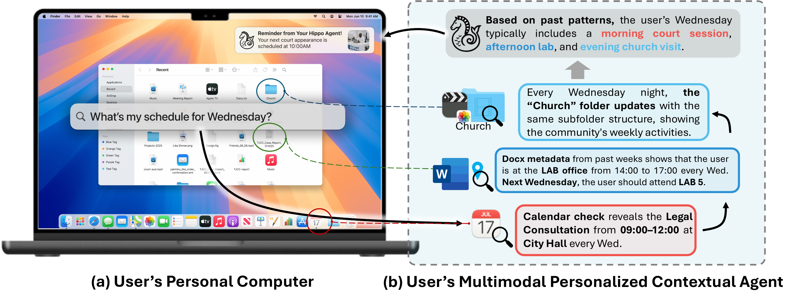
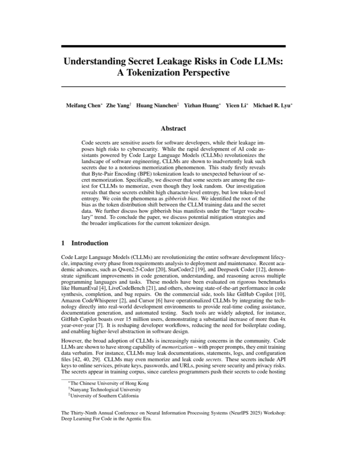

Under Review

I am a Master's student in Artificial Intelligence (MSAI) at Nanyang Technological University, where I am fortunate to be advised by Prof. Ziwei Liu at MMLab.
Before NTU, I received my B.Sc. in Computer Science with First Class Honor from The Chinese University of Hong Kong, where I was fortunate to work with Prof. Michael R. Lyu at ARISE Lab.
I am currently excited about multimodal agents and world models.

personalization · file-system memory
memorization · data privacy

ACL 2025 Findings · NeurIPS 2025 DL4C Workshop
event extraction · prompt learning
Advised by Prof. Ziwei Liu. Multimodal agents, contextual benchmarking, and personalized file-system memory.
Advised by Prof. Michael R. Lyu. LLM memorization, data privacy, and tokenization-related security.
Product R&D. Knowledge graphs, model fine-tuning, Neo4j pipelines, automated data acquisition.
Advised by Prof. Dejan Marković. EEG signal processing and disease onset prediction.
Advised by Prof. Tsung-Yi Ho. Adversarial attacks on facial recognition systems.